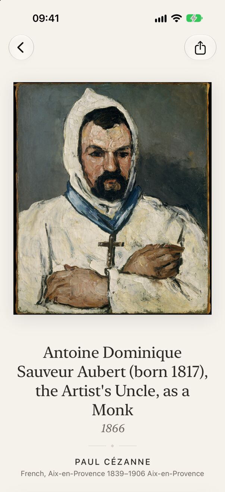

갤러리 열기
홈 화면 왼쪽 위의 갤러리 버튼을 탭하세요. 갤러리가 왼쪽에서 밀려 들어오고, ‹를 탭하면 다시 들어가요.
그림은 최신순으로 걸려 있어요. 맨 아래 카드에는 총 집중 시간, 작품 수, 현재 연속 기록이 보이며, 탭하면 통계가 열려요.


그림 페이지
그림을 탭하면 페이지가 열려요. 큼직한 작품, 미술관 레이블(제목, 연도, 작가, 재료, 크기 등 메트로폴리탄 미술관의 정보), 그리고 나의 관람: 그림을 드러낸 날짜와 시간, 무엇을 위한 것이었는지가 이어져요.
- 오른쪽 위의 공유를 탭하면 액자 카드를 만들 수 있어요. 공유하기를 참고하세요.
- 인터넷에 연결되어 있지 않으면, 기기에 저장된 내용과 함께 더 자세한 정보는 인터넷 연결이 필요하다는 짧은 안내가 표시돼요.
갤러리 전체 공유하기
갤러리 오른쪽 위의 공유 버튼을 누르면 최근 그림들로 콜라주 카드를 만들어요.